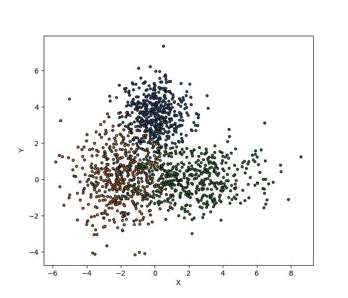
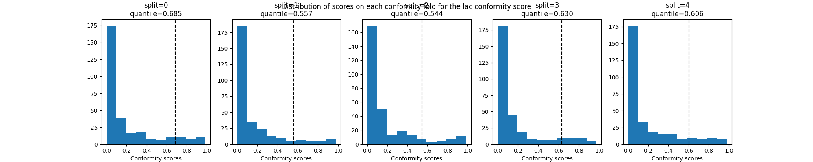
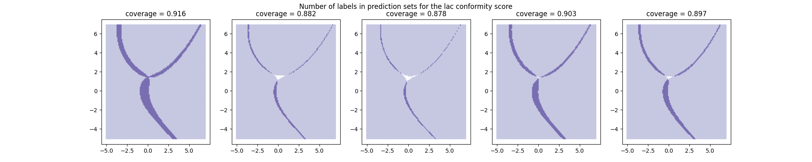
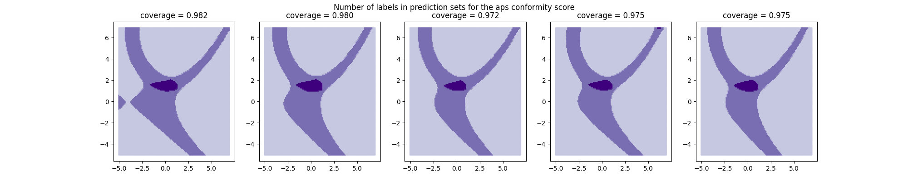
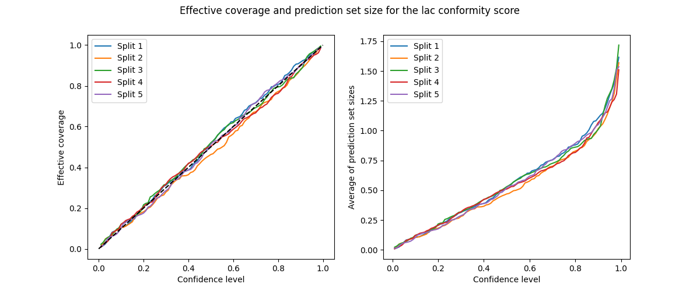
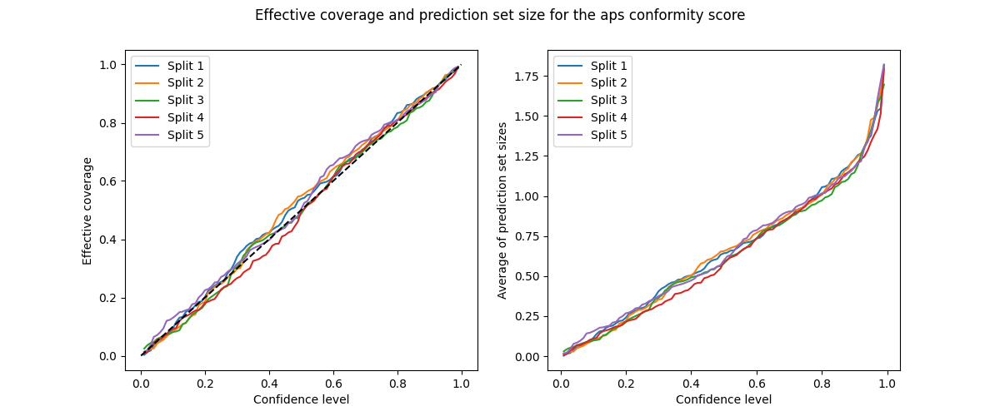
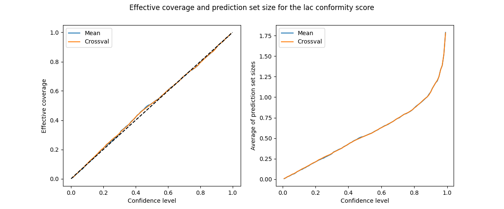
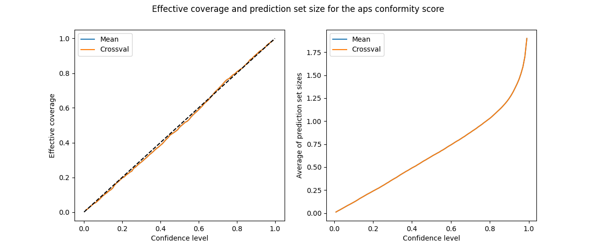

Note
Click here to download the full example code
Cross conformal classification explained¶
In this tutorial, we estimate the impact of the
training/conformalization split on the prediction sets and
on the resulting coverage estimated by
SplitConformalClassifier.
We then adopt a cross-validation approach in which the
conformity scores of all conformalization sets are used to
estimate the quantile. We demonstrate that this second
"cross-conformal" approach gives more robust prediction
sets with accurate conformity plots.
The two-dimensional dataset used here is the one presented by Sadinle et al. (2019) also introduced by other examples of this documentation.
We start the tutorial by splitting our training dataset
in K folds, and sequentially use each fold as a
conformalization set, while the K-1 folds remaining are
used for training the base model using
the prefit=True option of
SplitConformalClassifier.
# sphinx_gallery_thumbnail_number = 5
from typing import Any, Dict, List, Optional, Union
import matplotlib.pyplot as plt
import numpy as np
import pandas as pd
from numpy.typing import NDArray
from sklearn.model_selection import KFold
from sklearn.naive_bayes import GaussianNB
from typing_extensions import TypedDict
from mapie.classification import CrossConformalClassifier, SplitConformalClassifier
from mapie.metrics.classification import (
classification_coverage_score,
classification_mean_width_score,
)
1. Estimating the impact of train/conformalization split on the prediction sets¶
We start by generating the two-dimensional dataset and extracting training and test sets. Two test sets are created, one with the same distribution as the training set and a second one with a regular mesh for visualization. The dataset is two-dimensional with three classes, data points of each class are obtained from a normal distribution.
centers = [(0, 3.5), (-2, 0), (2, 0)]
covs = [[[1, 0], [0, 1]], [[2, 0], [0, 2]], [[5, 0], [0, 1]]]
x_min, x_max, y_min, y_max, step = -5, 7, -5, 7, 0.1
n_samples = 500
n_classes = 3
n_cv = 5
np.random.seed(42)
X_train = np.vstack(
[
np.random.multivariate_normal(center, cov, n_samples)
for center, cov in zip(centers, covs)
]
)
y_train = np.hstack([np.full(n_samples, i) for i in range(n_classes)])
X_test_distrib = np.vstack(
[
np.random.multivariate_normal(center, cov, 10 * n_samples)
for center, cov in zip(centers, covs)
]
)
y_test_distrib = np.hstack([np.full(10 * n_samples, i) for i in range(n_classes)])
xx, yy = np.meshgrid(np.arange(x_min, x_max, step), np.arange(x_min, x_max, step))
X_test = np.stack([xx.ravel(), yy.ravel()], axis=1)
Let's visualize the two-dimensional dataset.
colors = {0: "#1f77b4", 1: "#ff7f0e", 2: "#2ca02c", 3: "#d62728"}
y_train_col = list(map(colors.get, y_train))
fig = plt.figure(figsize=(7, 6))
plt.scatter(
X_train[:, 0],
X_train[:, 1],
color=y_train_col,
marker="o",
s=10,
edgecolor="k",
)
plt.xlabel("X")
plt.ylabel("Y")
plt.show()

We split our training dataset into 5 folds and use each fold as a
conformalization set. Each conformalization set is therefore used to estimate the
conformity scores and the given quantiles for the two methods implemented in
SplitConformalClassifier.
kf = KFold(n_splits=5, shuffle=True)
clfs, mapies, y_preds, y_ps_mapies = {}, {}, {}, {}
conformity_scores = ["lac", "aps"]
confidence_level = np.arange(0.01, 1, 0.01)
for conformity_score in conformity_scores:
clfs_, mapies_, y_preds_, y_ps_mapies_ = {}, {}, {}, {}
for fold, (train_index, conf_index) in enumerate(kf.split(X_train)):
clf = GaussianNB()
clf.fit(X_train[train_index], y_train[train_index])
clfs_[fold] = clf
mapie = SplitConformalClassifier(
estimator=clf,
confidence_level=confidence_level,
prefit=True,
conformity_score=conformity_score,
)
mapie.conformalize(X_train[conf_index], y_train[conf_index])
mapies_[fold] = mapie
y_pred_mapie, y_ps_mapie = mapie.predict_set(
X_test_distrib, conformity_score_params={"include_last_label": "randomized"}
)
y_preds_[fold], y_ps_mapies_[fold] = y_pred_mapie, y_ps_mapie
(
clfs[conformity_score],
mapies[conformity_score],
y_preds[conformity_score],
y_ps_mapies[conformity_score],
) = (clfs_, mapies_, y_preds_, y_ps_mapies_)
Let's now plot the distribution of conformity scores for each conformity
set and the estimated quantile for confidence_level = 0.9.
fig, axs = plt.subplots(1, len(mapies[conformity_scores[0]]), figsize=(20, 4))
for i, (key, mapie) in enumerate(mapies[conformity_scores[0]].items()):
quantiles = mapie._mapie_classifier.conformity_score_function_.quantiles_[89]
axs[i].set_xlabel("Conformity scores")
axs[i].hist(mapie._mapie_classifier.conformity_scores_)
axs[i].axvline(quantiles, ls="--", color="k")
axs[i].set_title(f"split={key}\nquantile={quantiles:.3f}")
plt.suptitle(
"Distribution of scores on each conformity fold for the "
f"{conformity_scores[0]} conformity score"
)
plt.show()

We notice that the estimated quantile slightly varies among the conformity sets for the two conformity scores explored here, suggesting that the train/conformalization splitting can slightly impact our results.
Let's now visualize this impact on the number of labels included in each prediction set induced by the different conformalization sets.
def plot_results(
mapies: Dict[int, Any],
X_test: NDArray,
X_test2: NDArray,
y_test2: NDArray,
conformity_score: str,
) -> None:
tab10 = plt.cm.get_cmap("Purples", 4)
fig, axs = plt.subplots(1, len(mapies), figsize=(20, 4))
for i, (_, mapie) in enumerate(mapies.items()):
y_pi_sums = mapie.predict_set(
X_test, conformity_score_params={"include_last_label": True}
)[1][:, :, 89].sum(axis=1)
axs[i].scatter(
X_test[:, 0],
X_test[:, 1],
c=y_pi_sums,
marker=".",
s=10,
alpha=1,
cmap=tab10,
vmin=0,
vmax=3,
)
coverage = classification_coverage_score(
y_test2, mapie.predict_set(X_test2)[1][:, :, 89]
)[0]
axs[i].set_title(f"coverage = {coverage:.3f}")
plt.suptitle(
"Number of labels in prediction sets "
f"for the {conformity_score} conformity score"
)
plt.show()
The prediction sets and the resulting coverages slightly vary among
conformalization sets. Let's now visualize the coverage score and the
prediction set size of each fold and for both conformity scores, when
confidence_level = 0.9.
plot_results(
mapies[conformity_scores[0]], X_test, X_test_distrib, y_test_distrib, "lac"
)
plot_results(
mapies[conformity_scores[1]], X_test, X_test_distrib, y_test_distrib, "aps"
)


Let's now compare the coverages and prediction set sizes obtained with the different folds used as conformalization sets.
def plot_coverage_width(
confidence_level: NDArray,
coverages: List[NDArray],
widths: List[NDArray],
conformity_score: str,
comp: str = "split",
) -> None:
if comp == "split":
legends = [f"Split {i + 1}" for i, _ in enumerate(coverages)]
else:
legends = ["Mean", "Crossval"]
_, axes = plt.subplots(nrows=1, ncols=2, figsize=(12, 5))
axes[0].set_xlabel("Confidence level")
axes[0].set_ylabel("Effective coverage")
for i, coverage in enumerate(coverages):
axes[0].plot(confidence_level, coverage, label=legends[i])
axes[0].plot([0, 1], [0, 1], ls="--", color="k")
axes[0].legend()
axes[1].set_xlabel("Confidence level")
axes[1].set_ylabel("Average of prediction set sizes")
for i, width in enumerate(widths):
axes[1].plot(confidence_level, width, label=legends[i])
axes[1].legend()
plt.suptitle(
"Effective coverage and prediction set size "
f"for the {conformity_score} conformity score"
)
plt.show()
split_coverages = np.array(
[
[
classification_coverage_score(y_test_distrib, y_ps)
for _, y_ps in y_ps2.items()
]
for _, y_ps2 in y_ps_mapies.items()
]
)
split_widths = np.array(
[
[classification_mean_width_score(y_ps) for _, y_ps in y_ps2.items()]
for _, y_ps2 in y_ps_mapies.items()
]
)
plot_coverage_width(confidence_level, split_coverages[0], split_widths[0], "lac")
plot_coverage_width(confidence_level, split_coverages[1], split_widths[1], "aps")


One can notice that the train/conformity indeed impacts the coverage and prediction set.
In conclusion, the split-conformal method has two main limitations:
-
It prevents us from using the whole training set for training our base model;
-
The prediction sets are impacted by the way we extract the conformalization set.
2. Aggregating the conformity scores through cross-validation¶
It is possible to "aggregate" the predictions through cross-validation mainly via two methods:
-
Aggregating the conformity scores for all training points and then simply averaging the scores output by the different perturbed models for a new test point
-
Comparing individually the conformity scores of the training points with the conformity scores from the associated model for a new test point (as presented in Romano et al. 2020 for the "aps" method)
Let's explore the two possibilities with the "lac" method using
CrossConformalClassifier.
All we need to do is to provide with the cv argument a cross-validation
object or an integer giving the number of folds.
When estimating the prediction sets, we define how the scores are aggregated
with the agg_scores attribute.
Params = TypedDict(
"Params",
{"method": str, "cv": Optional[Union[int, str]], "random_state": Optional[int]},
)
ParamsPredict = TypedDict(
"ParamsPredict", {"include_last_label": Union[bool, str], "agg_scores": str}
)
kf = KFold(n_splits=5, shuffle=True)
STRATEGIES = {
"score_cv_mean": (
Params(
confidence_level=confidence_level,
conformity_score="lac",
cv=kf,
random_state=42,
),
ParamsPredict(
conformity_score_params={"include_last_label": False}, agg_scores="mean"
),
),
"score_cv_crossval": (
Params(
confidence_level=confidence_level,
conformity_score="lac",
cv=kf,
random_state=42,
),
ParamsPredict(
conformity_score_params={"include_last_label": False}, agg_scores="crossval"
),
),
"cum_score_cv_mean": (
Params(
confidence_level=confidence_level,
conformity_score="aps",
cv=kf,
random_state=42,
),
ParamsPredict(
conformity_score_params={"include_last_label": "randomized"},
agg_scores="mean",
),
),
"cum_score_cv_crossval": (
Params(
confidence_level=confidence_level,
conformity_score="aps",
cv=kf,
random_state=42,
),
ParamsPredict(
conformity_score_params={"include_last_label": "randomized"},
agg_scores="crossval",
),
),
}
y_ps = {}
for strategy, params in STRATEGIES.items():
args_init, args_predict = STRATEGIES[strategy]
mapie_clf = CrossConformalClassifier(**args_init)
mapie_clf.fit_conformalize(X_train, y_train)
_, y_ps[strategy] = mapie_clf.predict_set(X_test_distrib, **args_predict)
Next, we estimate the coverages and widths of prediction sets for both aggregation strategies and both methods. We also estimate the "violation" score defined as the absolute difference between the effective coverage and the target coverage averaged over all confidence level values.
coverages, widths, violations = {}, {}, {}
for strategy, y_ps_ in y_ps.items():
coverages[strategy] = np.array(classification_coverage_score(y_test_distrib, y_ps_))
widths[strategy] = np.array(classification_mean_width_score(y_ps_))
violations[strategy] = np.abs(coverages[strategy] - confidence_level).mean()
Next, we visualize their coverages and prediction set sizes as function of
the confidence_level parameter.
plot_coverage_width(
confidence_level,
[coverages["score_cv_mean"], coverages["score_cv_crossval"]],
[widths["score_cv_mean"], widths["score_cv_crossval"]],
"lac",
comp="mean",
)
plot_coverage_width(
confidence_level,
[coverages["cum_score_cv_mean"], coverages["cum_score_cv_mean"]],
[widths["cum_score_cv_crossval"], widths["cum_score_cv_crossval"]],
"aps",
comp="mean",
)


Both methods give here the same coverages and prediction set sizes for this example. In practice, we obtain very similar results for datasets containing a high number of points. However, this is not the case for small datasets.
The conformity plots obtained with the cross-conformal methods seem to be more robust than with the split-conformal used above. Let's check this first impression by comparing the violation of the effective coverage from the target coverage between the cross-conformal and split-conformal methods.
violations_df = pd.DataFrame(
index=["lac", "aps"], columns=["cv_mean", "cv_crossval", "splits"]
)
violations_df.loc["lac", "cv_mean"] = violations["score_cv_mean"]
violations_df.loc["lac", "cv_crossval"] = violations["score_cv_crossval"]
violations_df.loc["lac", "splits"] = np.stack(
[np.abs(cov - confidence_level).mean() for cov in split_coverages[0]]
).mean()
violations_df.loc["aps", "cv_mean"] = violations["cum_score_cv_mean"]
violations_df.loc["aps", "cv_crossval"] = violations["cum_score_cv_crossval"]
violations_df.loc["aps", "splits"] = np.stack(
[np.abs(cov - confidence_level).mean() for cov in split_coverages[1]]
).mean()
print(violations_df)
Out:
Total running time of the script: ( 0 minutes 14.202 seconds)
Download Python source code: plot_crossconformal.py